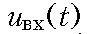

Глава 18. Корректирующие цепи и их синтез
18.1. Принцип корректирования искажений18.2. Амплитудные корректоры
18.3. Фазовые корректоры
18.4. Гармонические корректоры
Вопросы и задания для самопроверки
Глава 18. Корректирующие цепи и их синтез
18.1. Принцип корректирования искажений
Корректирование амплитудно-частотных искажений. Рассмотрим некоторую электрическую цепь – четырехполюсник (рис. 18.1), имеющую амплитудно-частотную характеристику (АЧХ), изобра-женную на рис. 18.2, а, а ослабление – на рис. 18.2, б. Пусть для упрощения входной сигнал

состоит из суммы всего двух гармоник с частотами w1 и 2w1 (рис. 18.3, а). Форма входного сигнала показана на этом рисунке жирной линией.Из анализа графиков АЧХ и ослабления цепи следует, что ам-плитуда первой гармоники при прохождении сигнала через цепь останется практически неизменной, а амплитуда второй гармоники уменьшится в несколько раз.

Результат сложения гармоник на выходе цепи дает форму сигнала, отличающуюся от входной (рис. 18.3, б).
Изменение формы сигнала на выходе цепи по сравнению с формой сигнала на ее входе называется искажением сигнала. Когда искажения формы сигнала связаны с непостоянством амплитудно-частотной характеристики цепи, они носят название амплитудно-частотных искажений.
Таким образом, условием отсутствия амплитудно-частотных искажений в цепи следует считать постоянство ее АЧХ (ослабления) на всех частотах (см. § 9.9):

На практике условие (18.1) часто не выполняется, т. е. АЧХ и ослабление цепей аппаратуры и линий связи не являются постоянными. Эти цепи практически всегда вносят амплитудно-частотные искажения в передаваемый сигнал. Устранить подобные искажения полностью не удается, но их можно уменьшить до величин, допустимых соответствующими нормами. Для этих цепей применяются амплитудные корректоры.
Амплитудный корректор
- это четырехполюсник, который включается каскадно с цепью. Его задача
заключается в том, чтоб


дополнить АЧХ цепи или ее рабочее ослабление до постоянной величины на всех частотах рабочего диапазона. Вне рабочего диапазона АЧХ цепи может иметь любую форму.
На рис. 18.4 изображена цепь, работающая между генератором с внутренним сопротивлением Rг и нагрузкой Rн. Рабочий коэффициент передачи этой цепи в соответствии с (12.44) равен:

Для достижения условий безискаженной передачи между цепью и нагрузкой включен корректор (рис. 18.5). Чтобы режим работы цепи не нарушался, входное сопротивление корректора должно равняться сопротивлению нагрузки. Очевидно, только при этом условии напряжение на выходе цепи будет равно U2, как и в схеме рис. 18.4 до включения корректора.
Если обозначить напряжение на выходе каскадного соединения цепи и корректора U2ў, то рабочий коэффициент передачи такого соединения запишется в виде

Разделим и умножим это выражение на U2 и представим его в виде произведения двух сомножителей

Первый сомножитель представляет рабочий коэффициент передачи цепи (см. рис. 18.4), а второй - коэффициент передачи по напряжению корректора.
Ослабление, вносимое каскадным соединением цепи и корректора,
 вычисляется путем сложения ослаблений цепи и корректора.
вычисляется путем сложения ослаблений цепи и корректора.

Из рис. 18.6 видно, что корректор должен вносить ослабление, дополняющее ослабление цепи в рабочей полосе частот wн ё wв до постоянной величины А0.
Корректирование фазочастотных искажений. Рассмотрим электрическую цепь - четырехполюсник (рис. 18.7), имеющую рабочую фазовую постоянную B(w), изображенную на рис. 18.8, а, и характеристику группового времени прохождения (ГВП) tгр(w), являющуюся производной от рабочей фазовой постоянной, - на рис. 18.8, б. Входной сигнал uвх(t) состоит из суммы двух гармоник с частотами w1 и 2w1 (рис. 18.9, а). Форма входного сигнала изображена на этом рисунке жирной линией.
Анализ графиков B(w) и tгр(w) цепи показывает, что фаза первой гармоники почти не меняется при прохождении сигнала через цепь, а фаза второй гармоники существенно увеличивается.
В результате сложения гармоник на выходе цепи получается сигнал, форма которого отличается от входной (рис. 18.9, б).
Искажения формы сигнала при прохождении его по цепи, обусловленные нелинейностью фазо-частотной характеристики цепи или непостоянством группового времени прохождения, называются фазо-частотными искажениями.
Условием отсутствия фазо-частотных искажений в цепи следует считать линейность рабочей фазовой постоянной B(w) и ФЧХ цепи (рис. 18.10, а):


Производная от фазо-частотной характеристики - это групповое время прохождения, которое для неискажающей цепи:

должна быть постоянной на всех частотах (рис. 18.10, б).
В реальных цепях условия (18.2) и (18.3) обычно не выполняются, т. е. ФЧХ не является линейной, а ГВП - не постоянно. Такие цепи вносят фазо-частотные искажения в передаваемый сигнал. Для уменьшения подобных искажений до допустимых значений применяют фазовые корректоры.
Фазовый корректор - это четырехполюсник, включаемый каскадно с цепью и дополняющий фазовую характеристику цепи до линейной. Вместо корректирования частотной характеристики фазы можно выравнивать характеристику группового времени прохождения так, чтобы она была постоянной на всех частотах рабочего диапазона. Фазовый корректор не должен искажать АЧХ цепи.
На рис. 18.11 для достижения условий безискаженной передачи между генератором и нагрузкой включено каскадное соединение цепи с ФЧХ, подлежащей коррекции, и корректора. Входное сопротивление фазового корректора должно равняться сопротивлению нагрузки, чтобы условия работы цепи не изменялись по сравнению с теми, в которых находится цепь, включенная между генератором и нагрузкой в отсутствие корректора.

Передаточная функция цепи, изображенной на рис. 18.11:


Умножим и разделим это выражение на U2 и представим его в виде произведения передаточных функций цепи Hц(jw) и корректора Hк(jw):

Фазо-частотная характеристика каскадного соединения цепи и корректора:

вычисляется как сумма ФЧХ цепи и корректора.
Из рис. 18.12 видно, что фазовый корректор должен дополнять ФЧХ цепи в рабочей полосе частот wн ё wв до линейной зависимости (рис. 18.12, а) либо дополнять групповое время прохождения цепи до постоянной величины t0 в том же рабочем диапазоне частот (рис. 18.12, б). За пределами рабочего диапазона ФЧХ и ГВП могут иметь любую форму.
Корректоры бывают постоянными и непостоянными (регулируемыми). Характеристики постоянных корректоров не меняются при изменении характеристик цепи. Существуют корректоры, характеристики которых можно изменить в зависимости от изменения параметров цепи. Изменение параметров цепи возможно, во-первых, при изменении показателей окружающей среды, прежде всего температуры. Во-вторых, в технике связи распространены коммутируемые сети, когда канал связи между двумя пользователями устанавливается случайным образом на время сеанса связи и заранее неизвестно, из каких участков он будет составлен. Погрешности в АЧХ и ФЧХ, вносимые каждым участком могут складываться неудачно, так что общая погрешность будет больше допустимых величин. В этом случае включают так называемые "подчисточные" корректоры. Настройку регулируемых корректоров производят либо вручную, либо автоматически.
18.2. Амплитудные корректоры
Пассивные корректоры. Пассивные амплитудные корректоры строят, как правило, в виде симметричной Т-перекрытой схемы.
Симметричный Т-перекрытый четырехполюсник приведен на рис. 18.13. Сопротивления Z1 и Z2 выбираются обратными, т. е. Z1ЧZ2 = R02. Если такой четырехполюсник нагрузить на сопротивление R0, то его входное сопротивление окажется равным также R0.
Комплексная передаточная функция по напряжению схемы рис. 18.13 может быть вычислена по формуле:

Операторная передаточная функция по напряжению имеет вид:

Вычислим ослабление, вносимое корректором:

Данная формула показывает, что зная поведение Z1 на разных частотах, можно определить частотную зависимость ослабления Aк.

Пример. Схема двухполюсника Z1 в продольном
плече корректора изображена на рис. 18.14, а. Построить график частотной
зависимости ослабления корректора Ак(w).
Построим вначале график частотной зависимости сопротивления реактивного двухполюсника X1(w), образованного элементами L1, C1, L3 и C3. На нулевой частоте индуктивное сопротивление равно нулю, а емкостное - бесконечности, поэтому X1(0) ® -Ґ. Двухполюсник имеет три резонанса, причем первый - резонанс напряжений, на частоте w1, второй - резонанс токов на частоте w2, третий - снова резонанс напряжений на частоте w3. Это значит, что X1(w1) = X1(w3) = 0, X1(w2) ® Ґ. При w ® Ґ сопротивление X1(w) также бесконечно большое (рис. 18.14, б).
Сопротивление Z1, стоящее в продольном плече корректора, содержит помимо реактивных элементов активное сопротивление R1 (рис. 18.14, а). Поэтому на частотах, равных 0, w2 и Ґ, на которых реактивное сопротивление X1(w) стремится к Ґ, полное сопротивление |Z1| двухплюсника ограничено величиной R1 (рис. 18.14, в).
Ослабление корректора Ак(w) рассчитывается по формуле (18.6) и зависит от значений |Z1(w)|. График Ак(w) повторяет по форме график |Z1(w)|. На частоте резонанса токов w2, а также на частотах w = 0 и w ® Ґ ослабление корректора Ак(w) достигает своего максимального значения:


На частотах резонанса напряжений w1 и w3 значение Ак(w) равно 0 (рис. 18.14, г).
Пример. Задано ослабление Ац(w) цепи,
подлежащей коррекции (рис. 18.15, а). Привести схему корректора, выравнивающего
характеристику этой цепи до значения А0.
Находим требуемую характеристику ослабления Ак(w) корректора из условия Ак(w) = А0 - Ац(w). График Ак(w) приведен на этом же рис. 18.15, а.
По характеристике Ак(w) строим графики частотной зависимости полного сопротивления |Z1(w)| и реактивного сопротивления X1(w) продольного плеча корректора (рис. 18.15, б и 18.15, в).
Из графиков рис. 18.15, в и 18.15, б следует, что двухполюсник Z1 имеет три реактивных элемента и одно активное сопротивление. В схеме два резонанса: первым наступает резонанс напряжений на частоте w1, вторым - резонанс токов на частоте w2. Таким условиям удовлетворяет двухполюсник Z1, изображенный на рис. 18.15, г. Двухполюсник Z2 в поперечном плече корректора является обратным двухполюснику Z1.
Схема корректора приведена на рис. 18.15, д.
На практике широко используются типовые звенья пассивных корректоров 1-го и 2-го порядков. Звенья 1-го порядка содержат по одному реактивному элементу в двухполюсниках Z1 и Z2. На рис. 18.16, а изображено такое звено с двухполюсником Z1, состоящим из параллельного соединения элементов R1 и C1.
Операторное сопротивление двухполюсника Z1:

Если подставить выражение (18.7) в формулу (18.5), то получим операторную передаточную функцию звена:


Частотная характеристика ослабления данного звена:


показана на рис. 18.16, б.
На рис. 18.17, а изображено звено 1-го порядка с двухполюсником Z1, состоящим из параллельного соединения R1 и L1. Операторная передаточная функция этого звена:


Частотная характеристика ослабления звена


показана на рис. 18.17, б.
Максимальное значение ослабления корректора:

Звенья 2-го порядка содержат по два реактивных элемента в двухполюсниках Z1 и Z2. На рис. 18.18, а изображено звено, содержащее последовательный колебательный контур и сопротивление R1 в продольной ветви корректора.


Операторная передаточная функция такого звена:

Частотная характеристика ослабления звена:

показана на рис. 18.18, б.
Максимальное значение Aкmax по-прежнему рассчитывается по формуле (18.9).

На рис. 13.19, а изображено еще одно звено 2-го порядка с двухполюсником Z1, представляющим собой параллельный колебательный контур. Операторная передаточная функция звена и частотная характеристика ослабления (рис. 3.19, б) имеют вид:


Значение Aкmax на графике рис. 18.20, б рассчитывается по формуле (18.9).
Пример. Определить элементы
в поперечном плече корректора (рис. 18.16, а), имеющего элементы R0 = 600
Ом, R1 = 2400 Ом, C1 = 60 нФ. Рассчитать и построить частотную зависимость
ослабления корректора Aк(f) в диапазоне частот 0 ё
8 кГц.
Элементы сопротивления Z2 в поперечной ветви должны быть обратны сопротивлению Z1.
Из теории двухполюсников известно, что для обратных двухполюсников Z1ЧZ2 = R02. Отсюда

Значения Aк(w) рассчитываем по формуле (18.8) или по общей формуле (18.6), применимой для корректора любого типа. Например, на частоте f = 0 получаем


Остальные значения Aк(f) рассчитываются аналогично. По результатам расчета простроен график Aк(f), изображенный на рис. 18.20.
Помимо Т-перекрытой схемы корректора (рис. 18.19) применяются также другие схемы, изображенные на рис. 18.21.
Передаточные функции, которые реализуются Т-перекрытым корректором, можно реализовать и элементарными четырехполюсниками, схемы которых приведены на рис. 18.22. Например, для четырехполюсника на рис. 18.22, а операторная передаточная функция

рассчитывается также, как и для корректора, построенного по Т-перекрытой схеме (см. формулу (18.5)). Цепи с элементарными четырехполюсниками применяются в случаях, когда не требуется согласование между генератором, корректором и нагрузкой.
Активные корректоры. Кроме пассивных схем амплитудных корректоров применяют активные схемы. Активные амплитудные корректоры строятся в общем случае с применением RC- и RLC-элементов, которые называют ARZ-цепями. Существует большое количество разновидностей активных звеньев эквивалентных по передаточной функции пассивным амплитудным корректорам. Две схемы таких активных звеньев на операционных усилителях изображены на рис. 18.23. Их передаточные функции выражаются соответствующими формулами:

Если в схеме рис. 18.23, а в качестве двухполюсника Z выбрать последовательное соединение резистора R и емкости C, то передаточная функция (18.10) звена принимает вид:


Частотная характеристика ослабления данного звена, также как и у пассивного звена 1-го порядка, вычисляется по формуле:

Данная функция при увеличении частоты имеет монотонно возрастающий характер от величины Aк(0) = 20lg(R1/R2) до величины Aк(Ґ) = 20lg[R1(R + R2)/RR2]. Если выбрать R1 < R2 и R = R1R2/(R2 - R1), то ослабление будет изменяться от Aк(0) до нуля, оставаясь отрицательным (рис. 18.24, кривая 1).
Выберем в схеме 18.23, б в качестве двухполюсника Z емкость С. Тогда передаточная функция (18.11) этого звена принимает вид:

Частотная характеристика ослабления:


При увеличении частоты данная функция имеет монотонно убывающий характер от Aк(0) = 0 до Aк(Ґ) = 20lg[R2/(R1 + R2)] (рис. 18.24, кривая 2).
Если в качестве двухполюсника Z выбрать последовательный LC-контур, то частотная характеристика ослабления будет иметь вид, показанный на рис. 18.25, кривая 1. При выборе в качестве двухполюсника Z параллельного LC-контура частотная характеристика ослабления будет иметь обратный характер, как показано на рис. 18.25, кривая 2.
Несмотря на то, что рассмотренные схемы могут содержать индуктивности, они имеют ряд преимуществ по сравнению с пассивными амплитудными корректорами. Так, число реактивных элементов вдвое меньше, а ослабление, вносимое каскадным соединением цепи и корректора, близко к нулю. Последнее важно также потому, что дополнительное ослабление за счет применения пассивного корректора, как правило, приходится компенсировать с помощью усилителя, т. е. общая схема все равно оказывается активной.
Пример. Определить передаточную функцию
амплитудного корректора, построенного по схеме рис. 18.23, б, в которой
в качестве двухполюсника Z выбран последовательный колебательный LC-контур.
Рассчитать и построить частотную характеристику ослабления Ак(f) корректора
в диапазоне частот от 0 до fв = 100 кГц для элементов контура R1 = 10 кОм,
R2 = 20 кОм, L = = 200 мГн, С = 1,268 нФ.
Операционный усилитель в схеме рис. 18.23, б включен по неинвертирующей схеме, поэтому передаточная функция корректора определяется по формуле (18.11), в которой Z(p) = pL + 1/(pC):

Частотная характеристика ослабления:


В формулах Hк(p) и Aк(w) величина 1/(LC) - это квадрат резонансной частоты w02 LC-контура. Для заданных значений L и С имеем:

Резонансная частота
 = 10 кГц. Рассчитаем значения Ак(f) на частотах, равных нулю, f0 = 10 кГц и fв = 100 кГц.
= 10 кГц. Рассчитаем значения Ак(f) на частотах, равных нулю, f0 = 10 кГц и fв = 100 кГц.

Аналогичным образом можно рассчитать ослабление Ак(f) на любой частоте в рабочем диапазоне. График Ак(f) изображен на рис. 18.26.
Синтез амплитудных корректоров. При синтезе пассивного амплитудного корректора исходными данными являются: частотная характеристика ослабления цепи Aц(w), подлежащая коррекции в диапазоне частот wн ... wв; точность коррекции DA в этом же диапазоне частот; сопротивление нагрузки R0.
Вначале определяют частотную характеристику амплитудного корректора Aк(w). Для этого необходимо задать характеристику ослабления A0 каскадного соединения цепи и корректора. Эта характеристика должна быть постоянной, не зависящей от частоты, причем ее величину принимают несколько большей, чем максимальное ослабление цепи:
 где A1 = 1 ... 2 дБ.
где A1 = 1 ... 2 дБ.
Частотная характеристика ослабления амплитудного корректора вычисляется по формуле:

На рис. 18.6 в качестве примера показаны характеристики ослабления цепи Aц(w), ослабления A0 каскадного соединения цепи и корректора, а также ослабления Aк(w) корректора.
Следующим этапом расчета амплитудного корректора является выбор схемы корректора. Выбирают такую схему, которая в диапазоне частот wн ... wв имеет нужный характер частотной зависимости ослабления. Например, для реализации частотной зависимости Aк(w), приведенной на рис. 18.6, можно использовать амплитудный корректор, в котором двухполюсник Z1 состоит из параллельного соединения емкости C1 и резистора R1 (рис. 18.16).
Выбрав схему корректора, приступают к ее расчету. При этом часто используется метод интерполирования. Согласно этому методу задаемся числом точек интерполирования, равным числу элементов в двухполюснике Z1. С учетом формулы (18.6) составляется система уравнений вида:

где x1 ... xn значения параметров элементов двухполюсника Z1. Решение данной системы и дает значения x1 ... xn, которые являются параметрами индуктивностей, емкостей и резисторов. Особенностями расчета является то, что, во-первых, параметры элементов могут быть отрицательными, а во-вторых - точность коррекции может не удовлетворять заданным требованиям. Обычно приходится данный расчет повторять. Если параметры элементов получились отрицательными, то следует либо изменить величину A1 в формуле (18.12), либо положение точек интерполяции. Если параметры элементов получились в конце концов положительными, то проверяется точность аппроксимации (коррекции). Для этого по формуле (18.6) рассчитывается ослабление корректора Aкp(w) и проверяется выполнение неравенства:

При выполнении неравенства расчет на этом заканчивается. В противном случае необходимо снова повторить расчет, меняя точки интерполяции, до получения равноволновой характеристики погрешности. Если при равноволновом характере погрешности требования к точности не выполняются, то необходимо либо увеличить число элементов в двухполюснике, либо поделить Aк(w) пополам и построить корректор в виде каскадного соединения двух четырехполюсников. Методика синтеза активных ARZ-корректоров такая же, как и описанная выше методика расчета пассивных
 амплитудных корректоров. Отличие заключается в том, что характеристика ослабления A0 каскадного соединения цепи и корректора выбирается близкой к нулю.
амплитудных корректоров. Отличие заключается в том, что характеристика ослабления A0 каскадного соединения цепи и корректора выбирается близкой к нулю.
Пример. В таблице 18.2
задана частотная характеристика ослабления цепи Ац(f). Рассчитать элементы
амплитудного корректора, если А0 = 12 дБ и R0 = 200 Ом.
Воспользуемся формулой (18.13) и рассчитаем ослабление корректора Ак(f) = А0 - Ац(f) в диапазоне частот от 0 до 50 кГц.
Результаты расчета Ак(f) приведены в таблице 18.3, а на рисунке 18.27 изображены графики ослаблений Ац(f), А0 и Ак(f).
Частотная характеристика ослабления Ак(f) на рис. 18.27 может быть получена с помощью корректора, реализованного по схеме рис. 18.19, в которой двухполюсник Z1 состоит из параллельного соединения элементов L1 и R1.
Найдем R1 из формулы (18.9):
center> Значение Акmax = 10,9 дБ на частоте f = 50 кГц берем из таблицы 18.3. Получаем:
Значение Акmax = 10,9 дБ на частоте f = 50 кГц берем из таблицы 18.3. Получаем:
 Для расчета L1 выбираем узел интерполяции: f1 = 25 кГц, Ак1(f1) = 6,2 дБ. Подставляем эти данные в формулу (18.6) или
Для расчета L1 выбираем узел интерполяции: f1 = 25 кГц, Ак1(f1) = 6,2 дБ. Подставляем эти данные в формулу (18.6) или


Получаем значение L1 = 2 мГн. Значения параметров элементов R2 и C2, образующих обратный двухполюсник Z2, рассчитываем по формулам:

Получаем R2 = 80 Ом и C2 = 0,05 мкФ. Расчетная характеристика ослабления корректора, вычисляемая по формуле (3.3), точно совпадает с требуемой только на частотах f1 = 25 кГц и fmax = 50 кГц. Используя каскадное соединение различных типовых звеньев корректоров, можно получить частотные зависимости ослабления Aк(w) любой сложности. На рис. 18.28 изображена схема сложного корректора, построенного на основе типовых схем (рис. 18.19), и его рабочее ослабление. Изменением характеристик типовых схем добиваются получения требуемой характеристики амплитудного корректора.
18.3. Фазовые корректоры
Пассивные корректоры. Фазовые
корректоры должны иметь постоянное входное сопротивление и постоянное ослабление,
которые не зависят от частоты. Таким условиям удовлетворяют симметричные
мостовые четырехполюсники (рис. 18.29), у которых сопротивления Z1 и Z2
реактивные и взаимообратные, т. е.:
 Такие четырехполюсники имеют с обеих сторон одинаковые характеристические сопротивления:
Такие четырехполюсники имеют с обеих сторон одинаковые характеристические сопротивления:
 поэтому их легко согласовывать с внутренним сопротивлением генератора и сопротивлением нагрузки.
поэтому их легко согласовывать с внутренним сопротивлением генератора и сопротивлением нагрузки.
Рабочее ослабление мостового симметричного согласованно включенного четырехполюсника с взаимно-обратными сопротивлениями Z1 и Z2 равно нулю на всех частотах: A(w) = 0, т. е. эта схема не вносит никакого дополнительного ослабления сигнала.
Операторная передаточная функция по напряжению схемы рис. 18.29 имеет вид:

Комплексная передаточная функция по напряжению схемы рис. 18.29, в которой Z1 и Z2 - реактивные двухполюсники, может быть вычислена по формуле:

Нетрудно видеть, что модуль передаточной функции (18.15) равен 1, а аргумент и ГВП вычисляются по формулам:


Формулы (18.16), (18.17) и (18.18) показывают, что фазо-частотная характеристика, фазовая постоянная и характеристика группового времени запаздывания корректора зависят только от вида двухполюсника X1.
На практике используются типовые звенья пассивных фазовых корректоров первого и второго порядков.
На рис. 18.30, а изображена схема фазового корректора 1-го порядка, в котором двухполюсником Z1 является индуктивность Z1(p) = pL, а двухполюсником Z2 - емкость Z2(p) = 1/(pC). Операторная передаточная функция этого корректора в соответствии с (18.14) имеет вид:

где a1 = R0/L.
Рабочая фазовая постоянная B(w) и ГВП в соответствии с формулами (18.17) и (18.18)

Графическое изображение данных характеристик показано на рис. 18.30, б и в. На рис. 18.31, а изображена схема фазового корректора 2-го порядка, с двухполюсником Z1, состоящим из последовательного соединения элементов L1 и C1, т. е. Z1(p) = pL1 + 1/(pC1). Операторная передаточная функция такого корректора в соответствии с (18.14) имеет вид:


где w02 = 1/(L1C1), Qп = 1/(w0R0C1) -добротность полюса передаточной функции.
Комплексная передаточная функция корректора получается при p = jw:

Модуль функции равен 1, а рабочая фазовая постоянная B(w) и ГВП tгр(w) вычисляются в соответствии с (18.17) и (18.18) по формулам:

Графики зависимостей B(w) и tгр(w) фазового корректора 2-го порядка приведены на рис. 18.31, б и в. Если известны коэффициенты передаточной функции w0, Qп и нагрузка R0, то параметры элементов корректора рассчитываются по формулам

Пример. Фазовый корректор (рис. 18.30, а) имеет элементы L1 = 100 мГн, R0 = 500 Ом. Рассчитать и построить графики частотных зависимостей фазовой постоянной Bк(f) и группового времени прохождения tгр(f) в диапазоне частот от 0 до 10 кГц.
Фазовая характеристика B(w) рассчитывается по формуле (18.20), поэтому:


ГВП tгр(w) рассчитывается по формуле (18.21), поэтому:

Подставляя в выражения для Bк(f) и tгр(f) значения L1 = 10Ч10-3 Гн и R0 = 500 Ом, получаем:


Результаты расчета Bк(f) и tгр(f) в диапазоне частот f = 0 ё 10 кГц приведены в таблице 18.4, а графики - на рис. 18.32, а и б.
Пример. Схема фазового корректора приведена на рис. 18.31, а. Рассчитать и построить графики частотных зависимостей фазовой постоянной Bк(f) и ГВП tгр(f) в диапазоне частот от 0 до 10 кГц для двух случаев:
1) R0 = 600 Ом; L1 = 36 мГн, С1 = 0,025 мкФ;
2) R0 = 600 Ом; L1 = 36 мГн, С1 = 0,05 мкФ.
Фазовая характеристика Bк(w) корректора рассчитывается по формуле (18.23), а ГВП tгр(w) по формуле (18.24), поэтому:


где w02 = 1/(L1C1), Qп = 1/(w0R0C1).
Рассчитаем значения w02 и Qп для двух случаев задания параметров элементов корректора:

Подставляя значения w02 и Qп в выражения для расчета Bк(f) и tгр(f), рассчитываем эти характеристики в диапазоне частот от 0 до 10 кГц и заносим результаты расчета в таблицу 18.5 для случая 1) и в таблицу 18.6 для случая 2).
Поскольку график tгр(w) имеет максимум (рис. 18.31, в), то для определения частоты этого максимума берем производную dtгр(w) и, приравняв ее к нулю, находим:
 для первого случая (Qп = 2) и fmax = 2,42 кГц
для второго случая (Qп =1,41).
для первого случая (Qп = 2) и fmax = 2,42 кГц
для второго случая (Qп =1,41).
В общем случае анализ выражения (18.27) показывает, что при Qп Х ГВП имеет максимум на частоте f = 0, а при Qп < = 1,73 максимум ГВП - на частоте fmax.
Значение tгрmax рассчитывается по формуле:
 Для второго случая, когда Q = 1,41, имеем tгрmax = 144 мкС. Следует также отметить, что при Qп . 1 формулы (18.27) и (18.28) существенно упрощаются:
Для второго случая, когда Q = 1,41, имеем tгрmax = 144 мкС. Следует также отметить, что при Qп . 1 формулы (18.27) и (18.28) существенно упрощаются:

Графики зависимостей Bк(w) и tгр(w) для двух случаев приведены на рис. 18.33 (обозначены цифрами 1 и 2).


Мостовая схема не всегда удобна в реализации, так как является уравновешенной. Существует ряд эквивалентных схем в виде неуравновешенной схемы, как показано на рис. 18.34. Заметим, что на практике добротность полюса больше единицы и поэтому чаще используется схема рис. 18.34, а, что удобно, так как она не содержит связанных индуктивностей с заданным коэффициентом связи. Неуравновешенные схемы по сравнению с мостовыми содержат вдвое меньше элементов.
Активные корректоры. Помимо пассивных фазовых корректоров применяют активные фазовые корректоры. Кроме пассивных RC или RLC-элементов схемы активных корректоров содержат операционные усилители. Существуют активные фазовые звенья 1-го и 2-го порядков. На рис. 18.35 приведена схема фильтрового звена на операционном усилителе. Передаточная функция этого звена вычисляется по формуле:


Выражение (18.30) аналогично формуле для расчета передаточной функции пассивного фазового корректора (18.19), т. е. схема, приведенная на рис. 18.35, - это активный корректор 1-го порядка. Фазовые характеристики B(w) и ГВП данного звена, также как у пассивного корректора 1-го порядка, вычисляются по формулам

График Bк(w) монотонно нарастает от Bк(0) = 0 до Bк(Ґ) = p, а график tгр(w) монотонно убывает от tгр(0) = 2/a1 до tгр(Ґ) = 0. На рис. 18.36 показаны графики Bк(w) и tгр(w), построенные для разных значений a1 активного корректора 1-го порядка.
На рис. 18.37 приведена еще одна схема активного фазового корректора, также построенная на основе активного фильтрового звена. Если в схеме рис. 18.37 задать R3 = nR2, R4 = nR2/(n -1), n > 1, то передаточная функция, рассчитанная, например, с помощью метода узловых напряжений, будет иметь вид:


Это передаточная функция фазового корректора (сравни с формулой (18.14)).
Если в качестве двухполюсника Z выбрать емкость, то передаточная функция (18.31) принимает вид (18.30):
 т. е. схема на рис. 18.37 - это схема фазового корректора 1-го порядка.
Когда в качестве двухполюсника Z используется последовательный LC-контур, то получается передаточная функция фазового корректора 2-го порядка:
т. е. схема на рис. 18.37 - это схема фазового корректора 1-го порядка.
Когда в качестве двухполюсника Z используется последовательный LC-контур, то получается передаточная функция фазового корректора 2-го порядка:
 ,
где w02 = 1/(LC), Qп = 1/(w0R1C) - добротность полюса передаточной функции.
,
где w02 = 1/(LC), Qп = 1/(w0R1C) - добротность полюса передаточной функции.
Графики частотных зависимостей Bк(w) и tгр(w) данного корректора, полученные для разных значений Qп, приведены на рис. 18.38. Хотя активные ARZ-фазовые корректоры имеют индуктивность, но преимуществом их по сравнению с пассивными корректорами является меньшее количество элементов при том же порядке передаточных функций.
Пример. Определить передаточную функцию
фазового корректора, построенного по схеме рис. 18.35, в которой в качестве
двухполюсника Z используется параллельный LC-контур. Рассчитать и построить
качественно частотную характеристику ГВП tгр(f) корректора в диапазоне частот
от 0 до 5 кГц для элементов цепи R1 = 37,5 Ом, L = 36 мГн, C = 1,6 мкФ.
Найдем сопротивление Z(p) параллельного LC-контура:

Подставив Z(p) в формулу (18.31), получим передаточную функцию фазового корректора:

где w02 = 1/(LC), Qп = w0R1C.
ГВП рассчитывается по формуле (18.24), в которой w = 2pf,

Находим значения w02 и Qп:

Поскольку , то находим значения wmax и tгрmax по формулам (18.27) и (18.28):

Рассчитываем значения tгр(f) на частотах f1 = 0 и f2 = 5 кГц по формуле (18.24). Получаем tгр(f1) = 1,92 мС и tгр(f2) = 0,12 мС. График зависимости tгр(f) приведен на рис. 18.39.
Синтез фазовых корректоров. При синтезе фазовых корректоров задаются характеристика ГВП корректируемой цепи, сопротивление нагрузки R0, точность коррекции и диапазон частот wн ... wв, в котором осуществляется коррекция. Вначале определяют требуемую характеристику фазового корректора. Для этого задают постоянное значение ГВП t0, которое должно быть несколько больше максимального значения ГВП цепи (рис. 18.12, б):

Затем любым способом определяют площадь Sк под характеристикой требуемого ГВП корректора, например, площадь можно рассчитать по формуле:

После этого приближенно можно определить число фазовых звеньев второго порядка, необходимых для коррекции, так как площадь под кривой группового времени фазового звена второго порядка равна 2p:
 В данной формуле коэффициентом 1.1 учитывается то, что не вся площадь под характеристикой фазового звена попадает в диапазон коррекции.
В данной формуле коэффициентом 1.1 учитывается то, что не вся площадь под характеристикой фазового звена попадает в диапазон коррекции.
Зная число звеньев, задаемся в первом приближении их параметрами w0k и Qпk, k = 1 ... n. Для начала частоты распределяются равномерно, добротность определяют из условия требуемой величины группового времени звена на частоте wmaxk. Эта величина выбирается на 10 ... 20% меньше, чем требуемое групповое время корректора на этой частоте. Из сказанного и формулы (18.27) следует:


где m = 0,8 ... 0,9.
На рис. 18.40 показаны характеристики ГВП четырех фазовых звеньев, требуемая и реальная характеристики ГВП корректора.
Далее с применением компьютерных программ решается оптимизационная задача в общей постановке:

Если полученный минимум меньше или равен требуемой точности коррекции, то по заданным Qпk, w0k и R0 рассчитывают элементы L1k и C1k мостовой схемы фазового звена (рис. 18.31, а). Остальные элементы находят из условия, что двухполюсники Za и Zb обратные:

Если полученная точность коррекции не удовлетворяет требованиям, то увеличивают число звеньев и повторяют расчет также с помощью компьютера. С синтезом активных фазовых корректоров можно познакомиться в специальной литературе.
18.4. Гармонические корректоры
Линии задержки. Одним
из элементов гармонических корректоров являются так называемые линии задержки
(ЛЗ). Идеальная линия задержки осуществляет задержку колебания на постоянную
величину Dt, не изменяя энергии этого колебания. Очевидно, модуль передаточной
функции (АЧХ) ЛЗ равен 1, а угол (ФЧХ) j(w) = -wЧDt. Таким образом, передаточная
функция линии задержки
 Однако данная функция не удовлетворяет УФР, так как j(w) не является тангенс-функцией. В реальной линии задержки ГВП является постоянным только с определенной степенью точности в заданном диапазоне частот. Будем рассматривать низкочастотные ЛЗ, рабочий частотный диапазон которых простирается от нуля до частоты w. Совершенно очевидно, что ЛЗ являются частным случаем фазового корректора (ФК). Отличие состоит в том, что от ФК требуется воспроизвести частотную характеристику ГВП, вообще говоря, произвольной формы, в то время как ЛЗ обладает только постоянным, с заданной степенью точности, групповым временем. В связи с этим есть возможность заранее рассчитать набор ЛЗ для различных значений ГВП и различной точности его воспроизведения и оформить результаты в виде каталогов. Как и в случае аппроксимации характеристик фильтров, применяется как равноволновая аппроксимация, так и аппроксимация монотонными характеристиками.
Определим далее общий вид операторной передаточной функции ЛЗ. Во-первых, знаменатель любой передаточной функции должен быть полином Гурвица v(p). Во-вторых, непосредственной подстановкой легко убедиться, что модуль комплексной передаточной функции равен единице, если в числителе находится полином, сопряженный полиному знаменателя. Поэтому в самом общем виде комплексная передаточная функция ФК или ЛЗ имеет вид
Однако данная функция не удовлетворяет УФР, так как j(w) не является тангенс-функцией. В реальной линии задержки ГВП является постоянным только с определенной степенью точности в заданном диапазоне частот. Будем рассматривать низкочастотные ЛЗ, рабочий частотный диапазон которых простирается от нуля до частоты w. Совершенно очевидно, что ЛЗ являются частным случаем фазового корректора (ФК). Отличие состоит в том, что от ФК требуется воспроизвести частотную характеристику ГВП, вообще говоря, произвольной формы, в то время как ЛЗ обладает только постоянным, с заданной степенью точности, групповым временем. В связи с этим есть возможность заранее рассчитать набор ЛЗ для различных значений ГВП и различной точности его воспроизведения и оформить результаты в виде каталогов. Как и в случае аппроксимации характеристик фильтров, применяется как равноволновая аппроксимация, так и аппроксимация монотонными характеристиками.
Определим далее общий вид операторной передаточной функции ЛЗ. Во-первых, знаменатель любой передаточной функции должен быть полином Гурвица v(p). Во-вторых, непосредственной подстановкой легко убедиться, что модуль комплексной передаточной функции равен единице, если в числителе находится полином, сопряженный полиному знаменателя. Поэтому в самом общем виде комплексная передаточная функция ФК или ЛЗ имеет вид

Заменив jw на р, получим операторную передаточную функцию

Как видим, вся информация о передаточной функции содержится в полиноме Гурвица. Так, фазовая характеристика четырехполюсника равна удвоенному аргументу полинома при р = jw

Мы уже убедились, что при построении каталогов удобно применять нормированные величины. В данном случае это нормированная частота W = w/wн и нормированное ГВП . При синтезе ЛЗ частота нормирования wн находится из условия, что на нулевой частоте нормированная функция , а ГВП равно 2, т. е.

Аппроксимация ГВП гладкими функциями осуществляется на основе полиномов Бесселя, которые имеют следующий вид:

Графики нормированной функции показаны на рис. 18.41. Задача аппроксимации максимально-гладкими функциями решена аналитически с помощью рядов Тейлора. Задаваясь погрешностью аппроксимации D, легко получить нормированные граничные частоты рабочей полосы линии задержки. На рис. 18.41 проведена линия на уровне 0,9, что отвечает 10% погрешности. Существуют справочники, в которых приведены таблицы, содержащие граничные нормированные частоты при различных порядках полинома Бесселя п и различных погрешностях. Зная полином Бесселя нетрудно численно найти координаты его корней, которые являются полюсами передаточной функции. Напомним, что в соответствии с (18.33) каждому полюсу в левой полуплоскости соответствует нуль в правой, т. е. p0k = -pk. Координаты корней полиномов Бесселя приведены в справочниках. Рассмотрим порядок синтеза ЛЗ с максимально-плоской характеристикой группового времени. При синтезе заданными величинами являются групповое время tз, рабочий диапазон частот 0 ... w1, погрешность аппроксимации D. Согласно (18.34) находим частоту нормирования wн при условии, что tгр(0) = tэ. Зная wн рассчитываем нормированную граничную частоту w1/wн = W1. Пользуясь графиками или таблицами, находим минимальный порядок передаточной функции ЛЗ, при которой граничная частота рабочей полосы частот равна или превышает W1. Найденному порядку соответствует полином Бесселя vБ(p). Таким образом, получена передаточная функция в виде

Зная координаты корней полинома Бесселя, передаточную функцию можно представить в виде произведений функций второго порядка и каждую функцию реализовать фазовым звеном, как это было рассмотрено ранее. Напомним, что при нечетном порядке т одна из функций будет первого порядка. Решить задачу равноволновой аппроксимации аналитически трудно, поэтому она решается численными методами и в справочниках приведены такие же таблицы, как и в случае аппроксимации максимально гладкими функциями. Поэтому порядок синтеза ЛЗ с равноволновыми характеристиками группового времени остается прежним, как и в случае монотонных характеристик.

Гармонические корректоры. Как уже отмечалось, параметры тракта передачи нуждаются в окончательной коррекции. Для этой цели применяются регулируемые корректоры, которые, как правило, настраиваются автоматически. Теория таких корректоров заключается в том, что передаточную функцию корректора, которая является с точностью до постоянной обратно пропорциональной по отношению к линии передачи, раскладывают в ряд по системе ортогональных функций: Если в качестве базисной функции jl(jw) выбрать передаточную функцию ЛЗ, то получится ряд Фурье в комплексной форме:

коэффициенты которого

Сделаем важные замечания: 1. Ряд Фурье применяется для разложения периодических функций. Поэтому АЧХ и ФЧХ такого корректора также будут периодическими. Интервал [-wс, wс] является рабочим. 2. Так как АЧХ линии передачи является четной функцией, а ФЧХ - нечетной, то коэффициенты (18.36) в разложении ряда Фурье (18.35) являются вещественными числами. 3. Для ускорения сходимости ряда из фазочастотной характеристики линии вычитают линейную составляющую, что устраняет разрывы ФЧХ на границах интервала. Попытаемся реализовать передаточную функцию (18.35). Из данного ряда следует, что передаточная функция корректора получается путем умножения передаточных функций линий задержки на вещественные числа с последующим суммированием. Однако, точная реализация функции (18.35) невозможна, так как требует бесконечного числа ЛЗ, поэтому ее реализуют приближенно, ограничиваясь конечными числами слагаемых с отрицательными (m) и положительными (n) индексами

Даже после усечения ряда, передаточная функция остается нереализуемой. Во-первых, передаточная функция ЛЗ не удовлетворяет УФР. Во-вторых, при отрицательных значениях l ФЧХ линии задержки равна |l|Dtw, а ее групповое время t = -dj(w)/dw - |l|Dt является отрицательным. В данном случае это означает, что нарушается причинно-следственная связь и колебание на выходе появляется раньше, чем на входе. Данная трудность легко преодолевается, если допустить что корректор вносит постоянную задержку tгр = (m+1)Dt. С учетом сказанного, функциональную схему корректора представляют в виде, показанном на рис. 18.42. Колебание х, поступающее на вход корректора, задерживается первой ЛЗ на время Dt и поступает на входы умножителя и следующей ЛЗ. Колебание, поступившее на вход второй ЛЗ, задерживается дополнительно на время Dt так, что общая задержка составляет 2Dt. Задержанное на эту величину колебание поступает на вход третьей ЛЗ и вход второго умножителя и т. д. Задержанные на величины Dt, 2Dt, 3Dt ... колебания суммируются, образуя колебание y. Таким образом, получается с точностью до множителя e(m+n)Dt передаточная функция (18.37). Умножитель в простейшем случае представляет собой делитель напряжения. Регулировка (настройка) корректора осуществляется с помощью изменения коэффициентов Аl. На практике изменяется коэффициент деления делителя. Для упрощения изображения схемы гармонического корректора каскадное соединение линии задержки заменяют одной ЛЗ с отводами, а умножители -переменным сопротивлением (кроме этого не показывают заземленных проводов). Соответствующая данным упрощениям схема гармонического корректора показана на рис. 18.43. Частным случаем гармонического корректора является косинусный корректор. Он получается когда число отводов слева и справа от нулевого одинаково и соответствующие коэффициенты с положительными и отрицательными индексами равны между собой, т. е. А-l = Аl. Тогда попарные суммы дают косинусоидальную функцию

а выражение (18.37) примет вид

Полученная функция является вещественной, а значит может применяться только для коррекции АЧХ.

В данном параграфе изложены только основы построения гармонических корректоров в диапазоне частот 0 ... w1. Здесь не рассмотрены полосовые корректоры, алгоритмы автоматической настройки корректоров, а также корректоры с обратными связями и ряд других вопросов, которые изучаются в специальных курсах.
Вопросы и задания для самопроверки
1. Почему происходят искажения сигнала на выходе цепи?
2. Сформулировать условие отсутствия амплитудно-частотных искажений в цепи.
3. Каким образом корректируются частотные характеристики цепей?
4. По какой схеме можно построить пассивный амплитудный корректор?
5. Как рассчитывается передаточная функция Т-перекрытого корректора и вносимое им ослабление?
6. Схема двухполюсника Z2 в корректоре приведена на рис. 18.14, а. Получить схему двухполюсника Z1. Построить график частотной зависимости ослабления Aк(w) корректора.
7. Какие схемы типовых звеньев пассивных корректоров известны? Какой вид имеют частотные характеристики вносимого ими ослабления?
8. Доказать, что частотная характеристика ослабления Aк(w) звена, изображенного на рис. 18.16, имеет вид (18.8), а максимальное значение ослабления рассчитывается по формуле Aкmax = = 20lg|1+R1/R0|.
9. Доказать, что операторная передаточная функция элементарного четырехполюсника, изображенного на рис. 18.22, б, соответствует передаточной функции корректора (формула (18.5)).
10. Какие амплитудные корректоры называются активными?
11. Получить передаточную функцию и частотную характеристику ослабления активного звена корректора, изображенного на рис. 18.23, б, в котором в качестве двухполюсника Z выбран параллельный LC-контур. Подтвердить, что график рабочего ослабления Aк(w) такого корректора - это кривая 2 на рис. 18.25.
Ответ:

12. Каков порядок расчета пассивного амплитудного корректора?
13. Рассчитать элементы, образующие двухполюсник Z1 амплитудного корректора, частотная зависимость ослабления Aк(f) которого приведена в таблице, а значение R0 = 200 Ом.

Ответ: R1 = 1 кОм, C1 = 51 нФ.
14. Зачем применяют каскадное соединение типовых звеньев корректоров?
15. Сформулировать условия безискаженной передачи сигнала.
16. Почему происходят фазо-частотные искажения?
17. Что такое групповое время прохождения?
18. По рис. 18.12 пояснить, как работает фазовый корректор.
19. Каким образом строятся пассивные фазовые корректоры?
20. Как рассчитываются передаточные функции Hк(p), фазовые характеристики Bк(w)и ГВП tгр(w) мостовых фазовых корректоров 1-го и 2-го порядков?
21. Как изменится график tгр(f) на рис. 18.32, б, если индуктивность L1 уменьшить в 2 раза.
22. Определить параметры элементов фазового корректора 2-го порядка (рис. 18.32) по заданным коэффициентам передаточной функции w0 , Qп = 0,25 и R0 = 600 Ом.
Ответ: L1 = 36 мГн; С1 = 1,6 мкФ;
L2 = 0,58 Гн; С2 = 0,1 мкФ.
23. Каким образом строятся активные фазовые корректоры?
24. Доказать, что операторная передаточная функция Hк(p) корректора, изображенного на рис. 18.35, имеет вид (18.30).
25. Каким образом на основе схемы рис. 18.37 получить фазовые корректоры 1-го и 2-го порядков?
26. Как изменится график tгр(f) на рис. 18.39, если сопротивление R1: 1) увеличить в 4 раза; 2) увеличить в 10 раз; 3) уменьшить в 2 раза?
27. Каков алгоритм расчета фазовых корректоров?